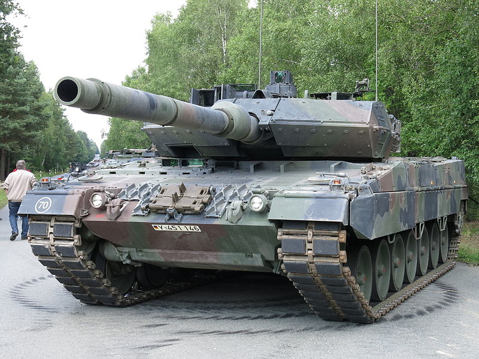
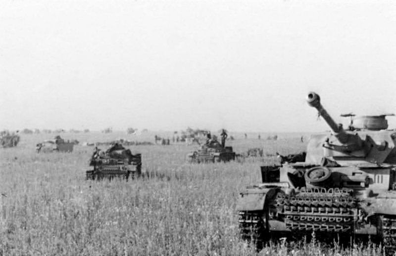
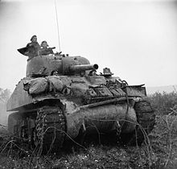
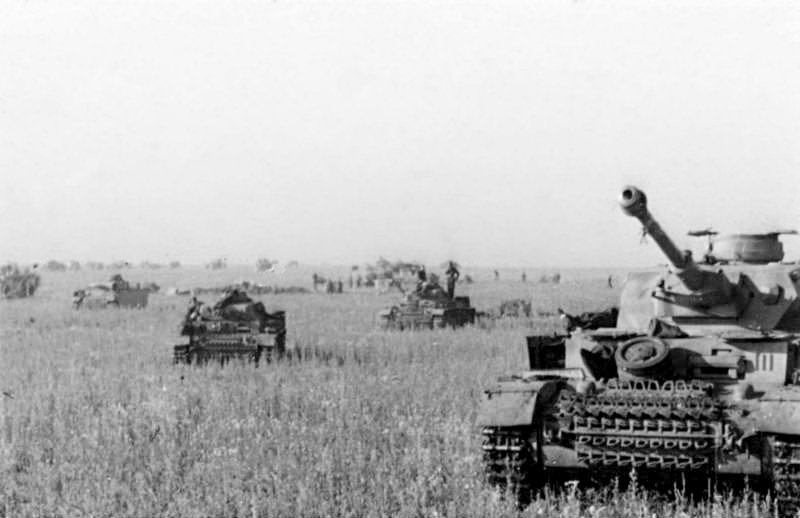
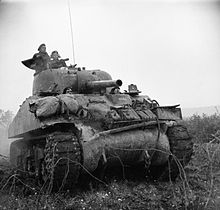

A tank is an armored fighting vehicle intended as a primary offensive weapon in front-line ground combat. Tank designs are a balance of heavy firepower, strong armor, and good battlefield mobility provided by tracks and a powerful engine; usually their main armament is mounted in a turret. They are a mainstay of modern 20th and 21st century ground forces and a key part of combined arms combat. Modern tanks are versatile mobile land weapons platforms whose main armament is a large-caliber tank gun mounted in a rotating gun turret, supplemented by machine guns or other ranged weapons such as anti-tank guided missiles or rocket launchers. They have heavy vehicle armor which provides protection for the crew, the vehicle's munition storage, fuel tank and propulsion systems. The use of tracks rather than wheels provides improved operational mobility which allows the tank to overcome rugged terrain and adverse conditions such as mud and ice/snow better than wheeled vehicles, and thus be more flexibly positioned at advantageous locations on the battlefield. These features enable the tank to perform well in a variety of intense combat situations, simultaneously both offensively (with direct fire from their powerful main gun) and defensively (as fire support and defilade for friendly troops due to the near invulnerability to common infantry small arms and good resistance against most heavier weapons), all while maintaining the mobility needed to exploit changing tactical situations.[1] Fully integrating tanks into modern military forces spawned a new era of combat: armored warfare. Until the arrival of the main battle tank, tanks were typically categorized either by weight class (light, medium, heavy or superheavy tanks) or doctrinal purpose (breakthrough-, cavalry-, infantry-, cruiser-, or reconnaissance tanks). Some being larger and very heavily armored and with large guns, while others are smaller, lightly armored, and equipped with a smaller caliber and lighter gun. These smaller tanks move over terrain with speed and agility and can perform a reconnaissance role in addition to engaging enemy targets. The smaller, faster tank would not normally engage in battle with a larger, heavily armored tank, except during a surprise flanking manoeuvre.
The first tank prototype, Little Willie, was unveiled in September 1915. Following its underwhelming performance–it was slow, became overheated and couldn’t cross trenches–a second prototype, known as “Big Willie,” was produced. By 1916, this armored vehicle was deemed ready for battle and made its debut at the First Battle of the Somme near Courcelette, France, on September 15 of that year. Known as the Mark I, this first batch of tanks was hot, noisy and unwieldy and suffered mechanical malfunctions on the battlefield; nevertheless, people realized the tank’s potential. Further design improvements were made and at the Battle of Cambrai in November 1917, 400 Mark IV’s proved much more successful than the Mark I, capturing 8,000 enemy troops and 100 guns.
.jpg)
During World War II, the first conflict in which armored vehicles were critical to battlefield success, the tank and related tactics developed rapidly. Armored forces proved capable of tactical victory in an unprecedentedly short amount of time, yet new anti-tank weaponry showed that the tank was not invulnerable. During the Invasion of Poland, tanks performed in a more traditional role in close cooperation with infantry units, but in the Battle of France deep independent armored penetrations were executed by the Germans, a technique later called blitzkrieg. Blitzkrieg used innovative combined arms tactics and radios in all of the tanks to provide a level of tactical flexibility and power that surpassed that of the Allied armor. The French Army, with tanks equal or superior to the German tanks in both quality and quantity, employed a linear defensive strategy in which the armored cavalry units were made subservient to the needs of the infantry armies to cover their entrenchment in Belgium. In addition, they lacked radios in many of their tanks and headquarters, which limited their ability to respond to German attacks.
In accordance with blitzkrieg methods, German tanks bypassed enemy strongpoints and could radio for close air support to destroy them, or leave them to the infantry. A related development, motorized infantry, allowed some of the troops to keep up with the tanks and create highly mobile combined arms forces. The defeat of a major military power within weeks shocked the rest of the world, spurring tank and anti-tank weapon development.
The North African Campaign also provided an important battleground for tanks, as the flat, desolate terrain with relatively few obstacles or urban environments was ideal for conducting mobile armored warfare. However, this battlefield also showed the importance of logistics, especially in an armored force, as the principal warring armies, the German Afrika Korps and the British Eighth Army, often outpaced their supply trains in repeated attacks and counter-attacks on each other, resulting in complete stalemate. This situation would not be resolved until 1942, when during the Second Battle of El Alamein, the Afrika Korps, crippled by disruptions in their supply lines, had 95% of its tanks destroyed and was forced to retreat by a massively reinforced Eighth Army, the first in a series of defeats that would eventually lead to the surrender of the remaining Axis forces in Tunisia.
.jpg) 



The Tiger I (About this soundlisten (help·info)) was a German heavy tank of World War II that operated beginning in 1942 in Africa and in the Soviet Union, usually in independent heavy tank battalions. It gave the German Army its first armoured fighting vehicle that mounted the 8.8 cm KwK 36 gun (derived from the 8.8 cm Flak 36). 1,347 were built between August 1942 and August 1944. After August 1944, production of the Tiger I was phased out in favour of the Tiger II.
While the Tiger I has been called an outstanding design for its time, it has also been called over-engineered, using expensive materials and labour-intensive production methods. In the early period Tiger was prone to certain types of track failures and breakdowns and was in general limited in range by its high fuel consumption. It was expensive to maintain, but generally mechanically reliable. It was difficult to transport and vulnerable to immobilisation when mud, ice, and snow froze between its overlapping and interleaved Schachtellaufwerk-pattern road wheels, often jamming them solid. This was a problem on the Eastern Front in the muddy rasputitsa season and during periods of extreme cold
The tank was given its nickname "Tiger" by Ferdinand Porsche, and the Roman numeral was added after the Tiger II entered production. The initial designation was Panzerkampfwagen VI Ausführung H (literally "armoured combat vehicle VI version H", abbreviated PzKpfw VI Ausf. H) where 'H' denoted Henschel as the designer/manufacturer. It was classified with ordnance inventory designation Sd.Kfz. 182. The tank was later re-designated as PzKpfw VI Ausf. E in March 1943, with ordnance inventory designation Sd.Kfz. 181.
Today, only seven Tiger I tanks survive in museums and private collections worldwide. As of 2021, Tiger 131 (captured during the North Africa Campaign) at the UK's Tank Museum is the only example restored to running order.
The Panther is a German medium tank deployed during World War II on the Eastern and Western Fronts in Europe from mid-1943 to the war's end in 1945. It had the ordnance inventory designation of Sd.Kfz. 171. It was designated as the Panzerkampfwagen V Panther until 27 February 1944, when Hitler ordered that the Roman numeral "V" be deleted. Contemporary English-language reports sometimes refer to it as the "Mark V".
The Panther was intended to counter the Soviet T-34 and to replace the Panzer III and Panzer IV. Nevertheless, it served alongside the Panzer IV and the heavier Tiger I until the end of the war. It is considered one of the best tanks of World War II for its excellent firepower and protection, although its reliability and mobility were less impressive; another drawback was the difficulty of maintenance in the field
The Panther was a compromise. While having essentially the same Maybach V12 petrol (690 hp) engine as the Tiger I, it had more effective frontal hull armour,[9] better gun penetration, was lighter and faster, and could traverse rough terrain better than the Tiger I. The trade-off was weaker side armour, which made it vulnerable to flanking fire. The Panther proved to be effective in open country and long-range engagements
The Panther was far cheaper to produce than the Tiger I. Key elements of the Panther design, such as its armour, transmission, and final drive, were simplifications made to improve production rates and address raw material shortages. The overall design remained described by some as "overengineered".[11][12] The Panther was rushed into combat at the Battle of Kursk in the summer of 1943 despite numerous unresolved technical problems, leading to high losses due to mechanical failure. Most design flaws were rectified by late 1943 and early 1944, though the bombing of production plants, increasing shortages of high-quality alloys for critical components, shortage of fuel and training space, and the declining quality of crews all impacted the tank's effectiveness
Though officially classified as a medium tank, its weight is more like that of a heavy tank, as its weight of 44.8 metric tons puts it roughly in the same category as the American M26 Pershing (41.7 tons), British Churchill (40.7 tons) and the Soviet IS-2 (46 tons) heavy tanks. The tank had a very high power-to-weight ratio, making it highly mobile regardless of its tonnage. Its weight still caused logistical problems, such as an inability to cross certain bridges. The naming of Panther production variants did not, unlike most German tanks, follow alphabetical order: the initial variant, Panther "D" (Ausf. D), was followed by "A" and "G" variants.

The M4 Sherman, officially Medium Tank, M4, was the most widely used medium tank by the United States and Western Allies in World War II. The M4 Sherman proved to be reliable, relatively cheap to produce, and available in great numbers. It was also the basis of several other armored fighting vehicles including self-propelled artillery, tank destroyers, and recovery vehicles. Tens of thousands were distributed through the Lend-Lease program to the British Commonwealth and Soviet Union. The tank was named by the British for the American Civil War general William Tecumseh Sherman
The M4 Sherman evolved from the M3 Medium Tank,[N 1] which – for speed of development – had its main armament in a side sponson mount. The M4 retained much of the previous mechanical design, but moved the main 75 mm gun into a fully traversing central turret. One feature, a one-axis gyrostabilizer, was not precise enough to allow firing when moving but did help keep the gun aimed in roughly the right direction for when the tank stopped to fire.[7] The designers stressed reliability, ease of production and maintenance, durability, standardization of parts and ammunition in a limited number of variants, and moderate size and weight (to facilitate shipping and for compatibility with existing bridging equipment.). These factors, combined with Sherman's then-superior armor and armament, outclassed German light and medium tanks fielded in 1939–42. The M4 was the most-produced tank in American history, with 49,324 produced (including variants); During World War II, the Sherman spearheaded many offensives by the Western Allies after 1942.
When the M4 tank went into combat in North Africa with the British Army at the Second Battle of El Alamein in late 1942, it increased the advantage of Allied armor over Axis armor and was superior to the lighter German[10] and Italian tank designs. For this reason, the US Army believed that the M4 would be adequate to win the war, and relatively little pressure was initially exerted for further tank development. Logistical and transport restrictions, such as limitations imposed by roads, ports, and bridges, also complicated the introduction of a more capable but heavier tank.[11][N 2] Tank Destroyer battalions using vehicles built on the M4 hull and chassis, but with open-topped turrets and more potent high-velocity guns, also entered widespread use in the Allied armies. Even by 1944, most M4 Shermans kept their dual-purpose 75 mm gun.[12] By then, the M4 was inferior in firepower and armor to increasing numbers of German upgraded medium tanks and heavy tanks but was able to fight on with the help of considerable numerical superiority, greater mechanical reliability, better logistical support, and support from growing numbers of fighter-bombers and artillery pieces.[13] Some Shermans were produced with a more armor-piercing gun, the 76 mm gun M1, refitted with a 76.2mm caliber Ordnance QF 17-pounder gun by the British (the Sherman Firefly), or given a 105mm gun to act as infantry support vehicles
The relative ease of production allowed large numbers of the M4 to be manufactured, and significant investment in tank recovery and repair units allowed disabled vehicles to be repaired and returned to service quickly. These factors combined to give the Allies numerical superiority in most battles, and many infantry divisions were provided with M4s and tank destroyers
After World War II, the Sherman, particularly the many improved and upgraded versions, continued to see combat service in many conflicts around the world, including the UN forces in the Korean War, with Israel in the Arab–Israeli wars, briefly with South Vietnam in the Vietnam War, and on both sides of the Indo-Pakistani War of 1965.
The T-34 is a Soviet medium tank introduced in 1940, famously deployed with the Red Army during World War II against Operation Barbarossa. Its 76.2 mm (3 in) tank gun was more powerful than its contemporaries[7] while its 60 degree sloped armour provided good protection against anti-tank weapons. The Christie suspension was inherited from the design of American J. Walter Christie's M1928 tank, versions of which were sold turret-less to the Red Army and documented as "farm tractors", after being rejected by the U.S. Army. The T-34 had a profound effect on the conflict on the Eastern Front in the Second World War, and had a lasting impact on tank design. After the Germans encountered the tank in 1941, German general Paul Ludwig Ewald von Kleist called it "the finest tank in the world"[8] and Heinz Guderian affirmed the T-34's "vast superiority" over German tanks.[9][10] Alfred Jodl, chief of operations staff of the German armed forces noted in his war diary "the surprise at this new and thus unknown wunder-armament being unleashed against the German assault divisions,"[11] although its armour and armament were surpassed later in the war.

The T-34 was the mainstay of Soviet armoured forces throughout the war. Its general specifications remained nearly unchanged until early 1944, when it received a firepower upgrade with the introduction of the greatly improved T-34-85 variant. Its production method was continuously refined and rationalized to meet the needs of the Eastern Front, making the T-34 quicker and cheaper to produce. The Soviets ultimately built over 80,000 T-34s of all variants, allowing steadily greater numbers to be fielded despite the loss of tens of thousands in combat against the German Wehrmacht.[13] Replacing many light and medium tanks in Red Army service, it was the most-produced tank of the war, as well as the second most-produced tank of all time (after its successor, the T-54/T-55 series).[14] With 44,900 lost during the war, it also suffered the most tank losses ever.[15] Its development led directly to the T-44, then the T-54 and T-55 series of tanks, which in turn evolved into the later T-62, that form the armoured core of many modern armies. T-34 variants were widely exported after World War II, and as recently as 2010 more than 130 were still in service